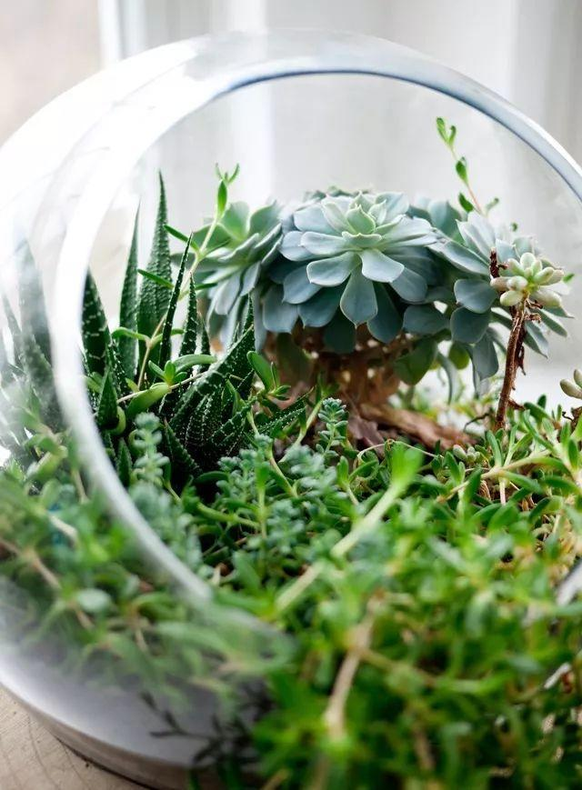
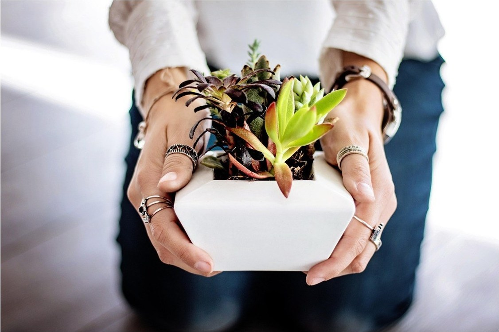
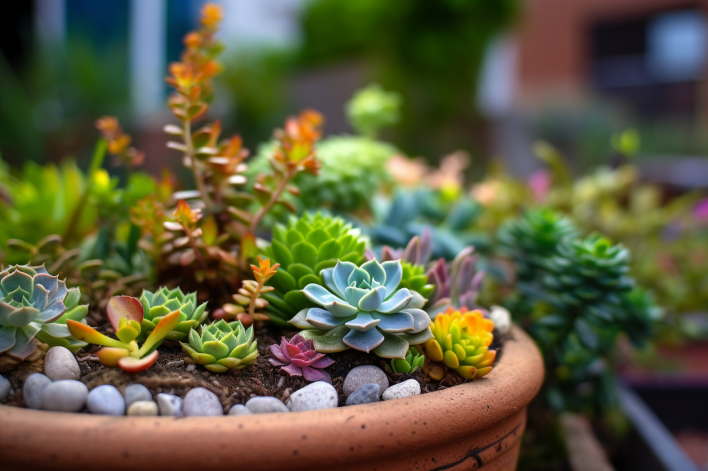
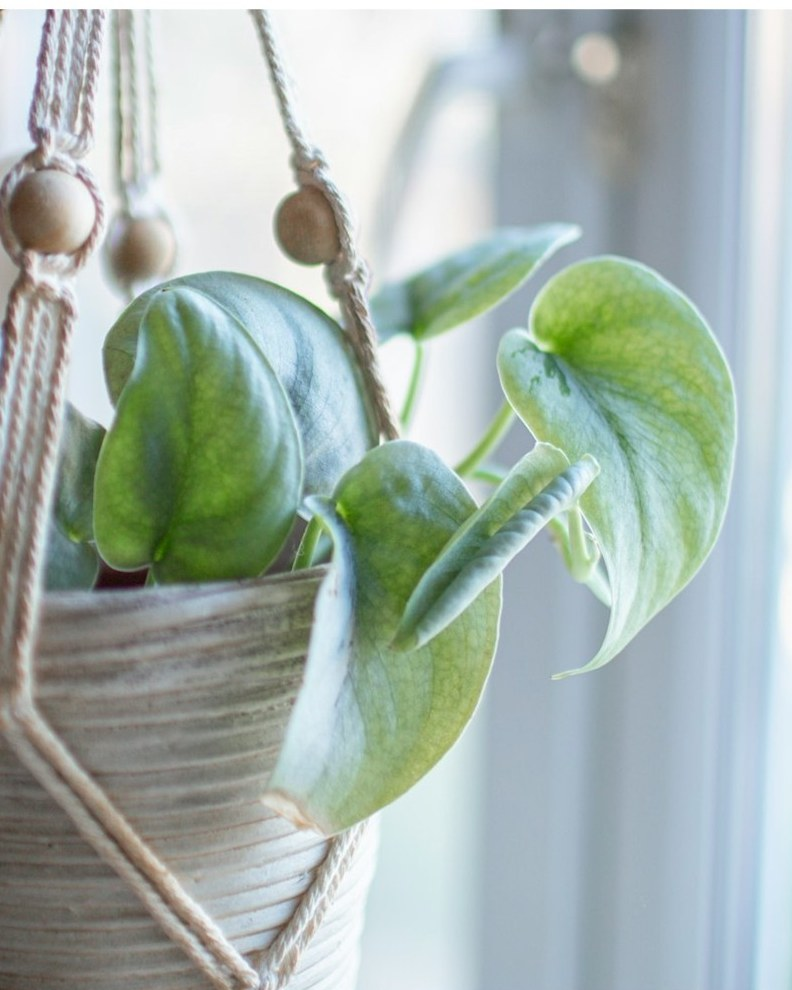
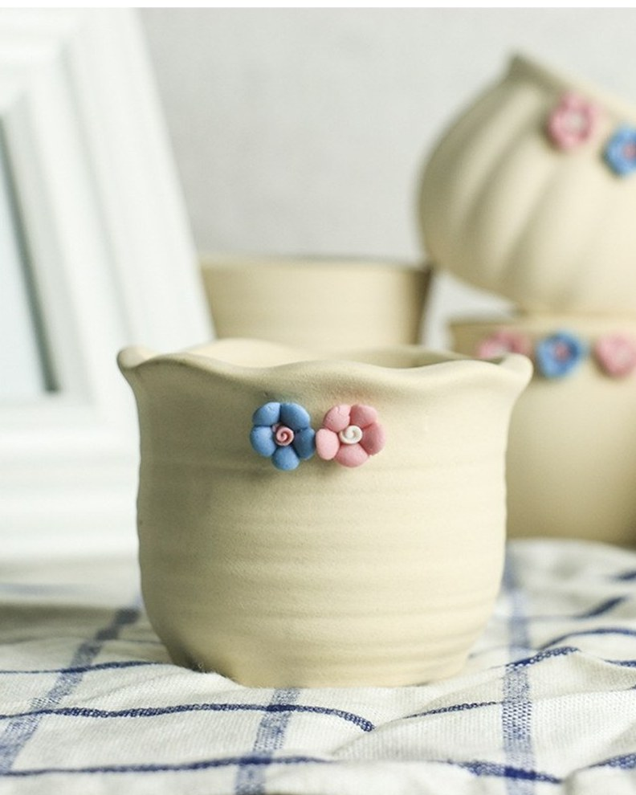

店长管店。选品、订货、和学校谈摊位，都是她的事。
Runs the shop: choosing what we stock, placing orders, and negotiating the stall with the university.
周一至周五 · 在店里 Mon–Fri · in the shopCampus Plant Corner · 校园绿植小店
( Small plants, big love )
我们把多肉、绿萝和手作花盆搬到校园的角落。你负责喜欢——浇水、换土、放假托管，都可以交给我们。
We bring succulents, pothos and hand-thrown pots to a corner of campus. You do the loving — watering, repotting and holiday boarding can be ours.

多肉、绿萝、小陶盆，都摆在一条长桌上。没有大盆栽，因为宿舍的窗台只有那么宽。
Succulents, pothos and small ceramic pots, all on one long table. Nothing large — a dorm windowsill is only so wide.
买走的那天起，它还在我们名单上。每周一条浇水提醒，黄叶了拍张照就行，放假可以寄养在店里。
From the day you take it home, it stays on our list. One watering reminder a week, a photo away when a leaf yellows, and boarding at the shop over the holidays.


¥15 起 from两周浇一次也不会死。适合总是忘记浇水的人。
Happy with a drink every two weeks — built for people who forget.

¥18 起 from长得快，扦插一截就能再活一盆。宿舍北窗也能过。
Grows fast — one cutting becomes another pot. Tolerates a north-facing dorm window.

¥25 起 from手工捏的陶盆，每只都不一样。买盆送一袋颗粒土。
Thrown by hand, so no two are alike. Every pot comes with a bag of gritty mix.
四步。从看见它，到它在你窗台上活过第一个学期。
Four steps, from first glance to its first full semester on your windowsill.
每周三、周五中午 12:00，A 座教学楼门口的长桌。下雨就挪到门厅里。
Wednesdays and Fridays at 12:00, a long table outside Building A. On rainy days we move into the lobby.
不知道选哪个就说你的窗朝哪边、多久想起来一次浇水，我们替你挑。
Not sure which one? Tell us which way your window faces and how often you remember to water — we will choose for you.
旧报纸加麻绳捆好，宿舍楼下可送。搬上楼的时候不会撒一车土。
Wrapped in newspaper and twine, delivered to your dorm if you like. No trail of soil on the stairs.
扫码进养护群。每周一条浇水提醒，出问题随时问，不用自己搜。
Scan in to the care group: a weekly reminder, and a human to ask instead of a search bar.
You go home for the break — we look after the plants.
放假前把盆搬到店里，回来再接走。平时加进养护群，每周三一条浇水提醒——不是群发广告，是按你买的那一盆发的。
Bring the pot to the shop before you leave and collect it when you are back. During term, one reminder every Wednesday — not a newsletter, but a note about the plant you actually bought.
免费寄养，寒暑假都可以Free boarding, winter and summer break
浇水提醒，按植物品种发Watering reminders, matched to the species
换盆换土，每年一次Repotting and fresh soil, once a year
本周待浇水 Watering this week
5/ 7 已完成 · done
外形是一个「无限」符号 ∞。
Our logo is shaped like the infinity symbol.
象征生命的延续，和无限的可能。
It symbolises the continuation of life and infinite possibilities.
左边的 ＋ 是加一点绿，右边的 － 是减一点焦虑。
A ＋ for a little more green on the left, a － for a little less anxiety on the right.
一个店长，两个小组。谁决定什么、谁在摊位、谁在群里回消息，都在下面这张图里。
One manager, two teams — who decides, who runs the stall, who answers in the group.
店长管店。选品、订货、和学校谈摊位，都是她的事。
Runs the shop: choosing what we stock, placing orders, and negotiating the stall with the university.
周一至周五 · 在店里 Mon–Fri · in the shop销售组卖植物。出摊、介绍品种、帮你挑到合适的那一盆。
Sells the plants: setting up the stall, talking through varieties, finding the one that suits your window.
周三 / 周五 · 长桌旁 Wed & Fri · at the table养护组浇水。换盆、寄养、回消息，让每一盆都活到下学期。
Keeps them alive: watering, repotting, boarding, and answering messages until next term.
每天 · 群里都在 Every day · in the group植物让校园更绿。Plants make campus green.
让我们一起爱护植物和自然。Let’s love plants and nature, together.
谢谢你！Thank you!
来见一面 · Come say hi
( Come pick one — bring your windowsill )
周三、周五中午 12:00，A 座门口。下雨在天桥下面。
Wednesdays and Fridays at noon, outside Building A. When it rains, under the footbridge.